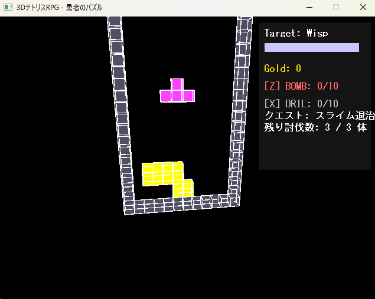

3Dテトリス
有限書庫 最初の完成作品
スクリーンショット

概要
プログラミング学習開始から約1か月のタイミングで制作した、 「3Dパズル」と「RPG」を組み合わせた試作ゲームです。
3D空間でテトリスを行いながら、 敵との戦闘や成長要素を組み合わせることを目標に制作しました。
現在見ると拙い部分も多くありますが、 個人開発を始めて最初の完成作品であり、 ゲーム制作の基礎を学ぶきっかけとなった作品です。
作品情報
ジャンル：3DパズルRPG
開発期間：約1か月
制作時期：ゲーム開発学習1か月目
使用技術
- C++
- DxLib
- Visual Studio
制作で学んだこと
- Visual Studioの導入
- C++プロジェクトの作成方法
- コンソールアプリからゲーム画面への移行
- DxLibの導入方法
- 2D描画の基礎
- 3D描画の基礎
- 日本語フォント表示時のトラブル対応
今後の改善点
- 敵の種類追加
- クエストシステムの実装
- アイテムの種類追加
- ゲームバランス調整
- 3D空間の演出強化
ひとこと
有限書庫の最初の完成作品。 ここから個人ゲーム開発の活動を開始しました。